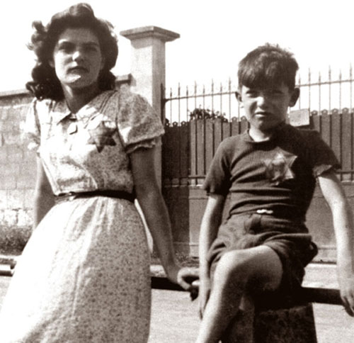

Portrait d’archive
Enfants Ast
Marc AST
Marc AST est né le 30/03/1940 à Reims en France.
Rassemblé à Lyon, il est déporté à Auschwitz le 07/10/1943 par le convoi n°60. Il est mort en déportation.
Dernière adresse connue : 8, rue tronchet (Lyon)
Nom : AST
Prénom(s) : Marc Marco
Date naissance : 30/03/1934
Âge (ans) : 9
Lieu naissance : Reims
Pays ou département : Marne
Lieu rassemblement : Lyon
Dernière adresse : 7, Rue Baudelaire ou 8 Rue Tronchet, Lyon 06
Ville : Villeurbanne ou Lyon
Code postal : 69100 ou 69006
N° Convoi : 60
Date déportation : 07/10/1943
Informations diverses : Alfred Chaim Alter AST (né le 12/10/1895 à Będzin, Silesia, Poland) et Rachel Rechla Salka AST, née Rubin (le 12/02/1902, Wieluń, Łódź, Poland) habite Belfort (3 rue de la Botte), Reims puis à Saint-Memmie (19, rue du Grand Mau, 51470) avec leurs deux enfants, Sulamite (Solange), née le 21 août 1925 à Belfort (Lorraine) et Marc, né le 30 mars 1934 à Reims. Sous l'occupation, Alfred AST est déchu par un décret-loi de Vichy de la nationalité française qu'il avait acquise en 1937, et frappé par l'interdiction de tenir un magasin, vendait sur les marchés des vêtements et des chapeaux confectionnés par Rachel. Il décide se mettre à l'abri en Zone Sud, se réfugia à Lyon sous le pseudonyme de RUBIN (nom de jeune fille de sa femme) et faisait parvenir de ses nouvelles par des cartes interzones adressées par prudence à des amis non juifs. Rachel et ses deux enfants va rejoindre son mari à Lyon.
Le 20 ou 21 septembre 1943, Alfred et Rachel AST née Rubin, modiste (Vielun, Pologne, 12/02/1902), en visite chez le frère de Rachel, David Rubin et sa femme, sont arrêtés au 112 rue Anatole France à Villeurbanne par la Gestapo en même temps que le couple et leurs trois enfants. Le lendemain, Solange et Marc sont arrêtés à leur domicile au 8 rue Tronchet ou se sont livrés pour ne pas être séparés de leurs parents (Source: Jocelyne HUSSON, professeur au lycée Clemenceau de Reims, La déportation des Juifs de la Marne, Presses universitaires de Reims, 1999; Témoignage de Alfred Ast à la gendarmerie en 1950). Alfred est interrogé et torturé par la Gestapo. Tous sont déportés par le même convoi 60 à Auschwitz. Seul le père transféré à Monowitz, Buna puis Dora d’où il est libéré par les troupes américaines le 7 avril 1945 a survécu. Soigné à l’hôpital Bichat à Paris, il rejoint Lyon en juin 1945 puis Châlons s/ Marne. Une carte de “déportée politique” au nom de Solange sera remise à son père.
Le 28 février 2019, une plaque à la mémoire des familles Rubin et Ast a été posée sur le lieu de leur arrestation au 112, rue Anatole-France à Villeurbanne.
Ast (Marc), né le 30 mars 1934 à Reims (Marne), décédé le 12 octobre 1943 à Auschwitz (Pologne). JO
Ast (Sulamite, dite Solange), née le 21 mars 1925 à Belfort (Territoire de Belfort), décédée le 12 octobre 1943 à Auschwitz (Pologne). Ast, née Rubin (Rachel) le 2 février 1902 à Vielun (Pologne), décédée le 12 octobre 1943 à Auschwitz (Pologne) et non le 7 octobre 1943.
Lieu de déportation : Auschwitz
Lieu de départ : Drancy
Nombre total de déporté·e·s du convoi : 1000
Gazé·e·s à l'arrivée : 491 (49,1 %)
Survivant·e·s en 1945 : 39 (3,9 %)
Solange Sulamite AST
Solange Sulamite AST est née le 21/03/1925 à Belfort en France.
En Terminale au lycée Saint-Just de Lyon; Au collège Victor Duruy à Châlons en Champagne (classe de troisième).
Dernière adresse connue : 8, rue Tronchet (Lyon)
Nom : AST
Prénom(s) : Solange Sulamite
Date naissance : 21/03/1925
Âge (ans) :
Lieu naissance : Belfort
Pays ou département : France
Lieu rassemblement : Lyon
Dernière adresse : 7, Rue Baudelaire ou 8 Rue Tronchet, Lyon 06
Ville : Villeurbanne ou Lyon
Code postal : 69100 ou 69006
N° Convoi : 60
Date déportation : 07/10/1943
Informations diverses : Alfred Chaim Alter AST (né le 12/10/1895 à Będzin, Silesia, Poland) et Rachel Rechla Salka AST, née Rubin (le 12/02/1902, Wieluń, Łódź, Poland) habite Belfort (3 rue de la Botte), Reims puis à Saint-Memmie (19, rue du Grand Mau, 51470) avec leurs deux enfants, Sulamite (Solange), née le 21 août 1925 à Belfort (Lorraine) et Marc, né le 30 mars 1934 à Reims. Solange était élève au collège Victor Duruy à Châlons-en-Champagne, en classe de troisième. Solange fréquente activement La Renaissance, la société de gymnastique de Châlons-sur-Marne. Sous l'occupation, Alfred AST est déchu par un décret-loi de Vichy de la nationalité française qu'il avait acquise en 1937, et frappé par l'interdiction de tenir un magasin, vendait sur les marchés des vêtements et des chapeaux confectionnés par Rachel. Il décide se mettre à l'abri en Zone Sud, se réfugia à Lyon sous le pseudonyme de RUBIN ( nom de jeune fille de sa femme ) et faisait parvenir de ses nouvelles par des cartes interzones adressées par prudence à des amis non juifs. Rachel et ses deux enfants va rejoindre son mari à Lyon. Solange est scolarisé en Terminale au lycée de Saint-Just à Lyon.
Le 20 ou 21 septembre 1943, Alfred et Rachel AST née Rubin, modiste (Vielun, Pologne, 12/02/1902), en visite chez le frère de Rachel, David Rubin et sa femme, sont arrêtés au 112 rue Anatole France à Villeurbanne par la Gestapo en même temps que le couple et leurs trois enfants. Le lendemain, Solange et Marc sont arrêtés à leur domicile au 8 rue Tronchet ou se sont livrés pour ne pas être séparés de leurs parents (Source: Jocelyne HUSSON, professeur au lycée Clemenceau de Reims, La déportation des Juifs de la Marne, Presses universitaires de Reims, 1999; Témoignage de Alfred Ast à la gendarmerie en 1950). Tous sont déportés par le même convoi. Seul le père a survécu.
Une salle du Palais des sports Pierre de Coubertin de Châlons-en-Champagne porte le nom de Solange AST.
Ast (Sulamite, dite Solange), née le 21 mars 1925 à Belfort (Territoire de Belfort), décédée le 12 octobre 1943 à Auschwitz (Pologne). JO
Ast (Marc), né le 30 mars 1934 à Reims (Marne), décédé le 12 octobre 1943 à Auschwitz (Pologne). Ast, née Rubin (Rachel) le 2 février 1902 à Vielun (Pologne), décédée le 12 octobre 1943 à Auschwitz (Pologne) et non le 7 octobre 1943.
Lieu de déportation : Auschwitz
Lieu de départ : Drancy
Nombre total de déporté·e·s du convoi : 1000
Gazé·e·s à l'arrivée : 491 (49,1 %)
Survivant·e·s en 1945 : 39 (3,9 %)